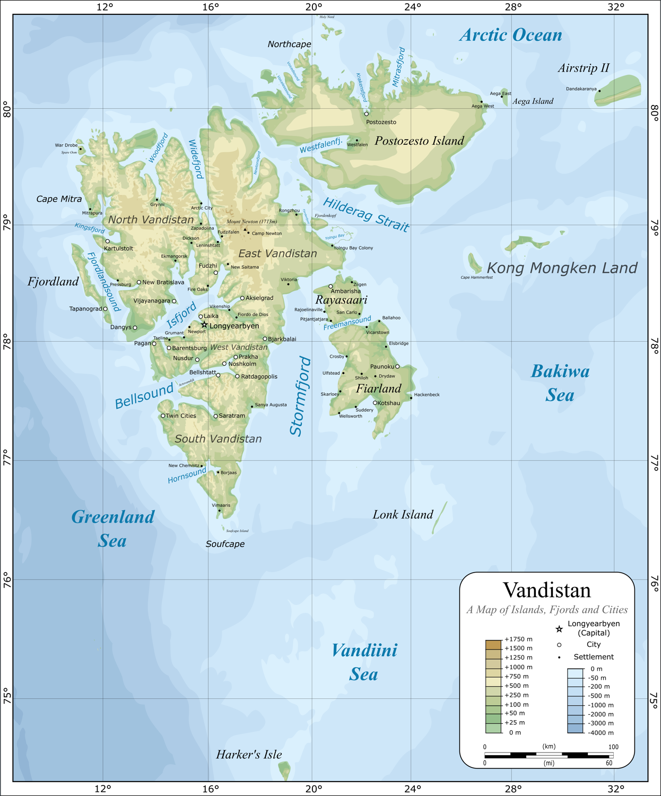

Vandistan, officially the Republic of Vandistan [Vandiino: Repúblik Vandistan], is an island country in Northern Europe, comprising of the islands of the Svalbard archipelago and the remote island of Jan Mayen.
